CNN (ResNet18 fine-tuned + augmentation) vs CLIP+LR probe
Date: 2026-07-10 · identical protocol for both: 856 originals (80 pos) + 140 RealBlur
negatives, 5-fold grouped+stratified OOF CV seed 0, scene = max over burst group.
ResNet18: ImageNet weights, ALL layers fine-tuned, 6 epochs/fold, weighted BCE,
on-the-fly aug (flip / ±12° rot / crop 85-100% / color jitter / noise).
Head-to-head (OOF, seed 0)
| model | scene PR-AUC | scene ROC-AUC | image PR-AUC |
image ROC-AUC | FP ≥ gate | FN < gate (of 80) |
|---|
| CLIP ViT-B/32 + LR (+RealBlur) — production recipe | 0.8985 | 0.9820 | 0.9109 | 0.9820 | 2 | 32 |
| ResNet18 fine-tuned + aug | 0.7685 | 0.9351 | 0.7357 | 0.9292 | 10 | 38 |
ROC overlay
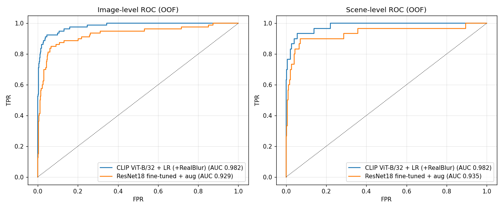
ResNet's mistakes (context for the gap)
False positives at gate (top 8)
germany1__20240816_150847.heic
OOF P=1.00
budapest__20250822_123528.jpg
OOF P=1.00
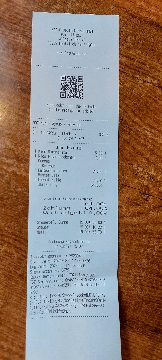
germany1__20240817_150601.heic
OOF P=0.99
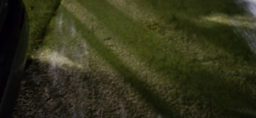
occl__20260705_214913.jpg
OOF P=0.98
budapest__20250822_123448.jpg
OOF P=0.97
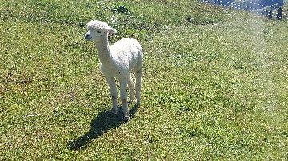
austria24__20230820_130048.jpg
OOF P=0.97
budapest__20250822_123443.jpg
OOF P=0.95
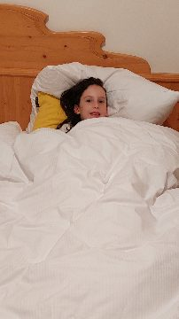
austria24__20230818_215834.jpg
OOF P=0.95
Worst false negatives (top 8)
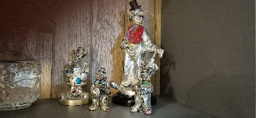
occl__20260705_215415.jpg
OOF P=0.00
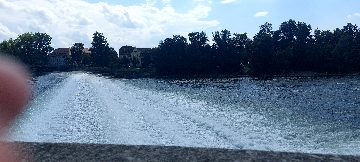
germany1__20240816_151011.heic
OOF P=0.00
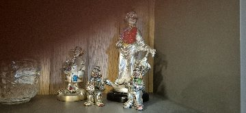
occl__20260705_215419.jpg
OOF P=0.00
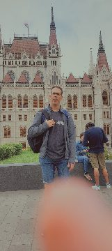
budapest__20250822_122626.jpg
OOF P=0.00
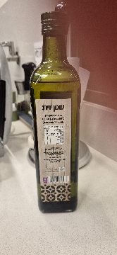
occl__20260705_215438.jpg
OOF P=0.01
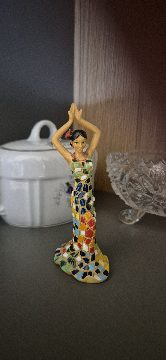
occl__20260705_215428.jpg
OOF P=0.01
budapest__20250822_122617.jpg
OOF P=0.01
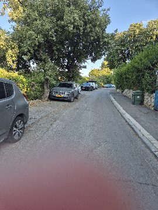
occl__20260628_182527.jpg
OOF P=0.02
Verdict: the frozen-CLIP probe beats the fine-tuned CNN by
~13 scene PR-AUC points
(0.899 vs 0.768) with 5× fewer false positives at the gate.
Training loss fell to ~0.01 (the CNN memorized the training set) while OOF stayed far behind —
80 positives is simply not enough data to fine-tune a CNN, even with heavy augmentation,
whereas CLIP's 400M-image pretraining already encodes the needed invariances and the LR head
only has ~1k parameters to fit. Augmentation helped neither model (CLIP: null; ResNet: still
overfits through it). Consistent with spec-096's frozen-ResNet50 result (0.66).
Reproduce
scripts/experiment_resnet_finetune.py → scripts/experiment_resnet_report.py.
OOF arrays: resnet_oof.npz. Cache: D:\occlusion_dataset\_cache256.